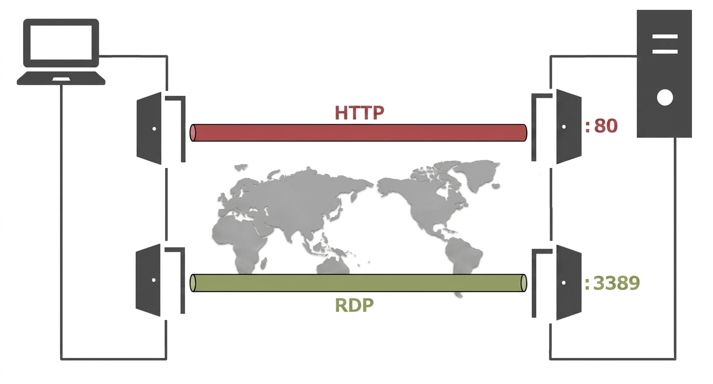
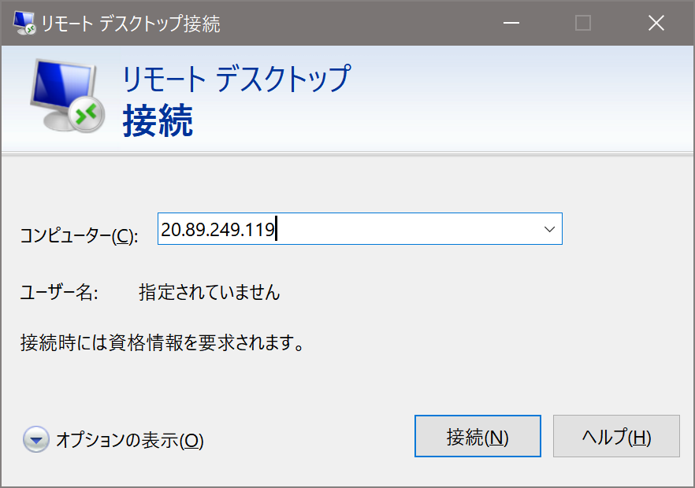
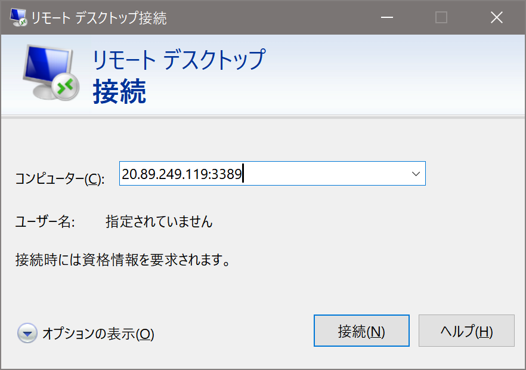
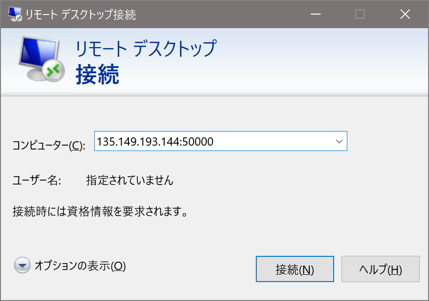
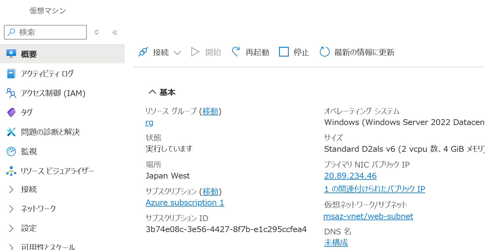
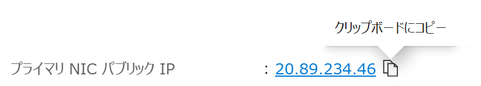
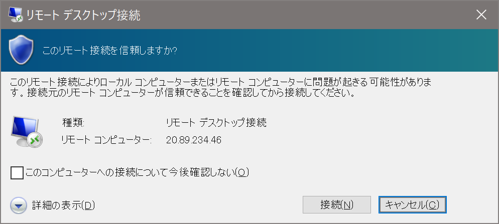
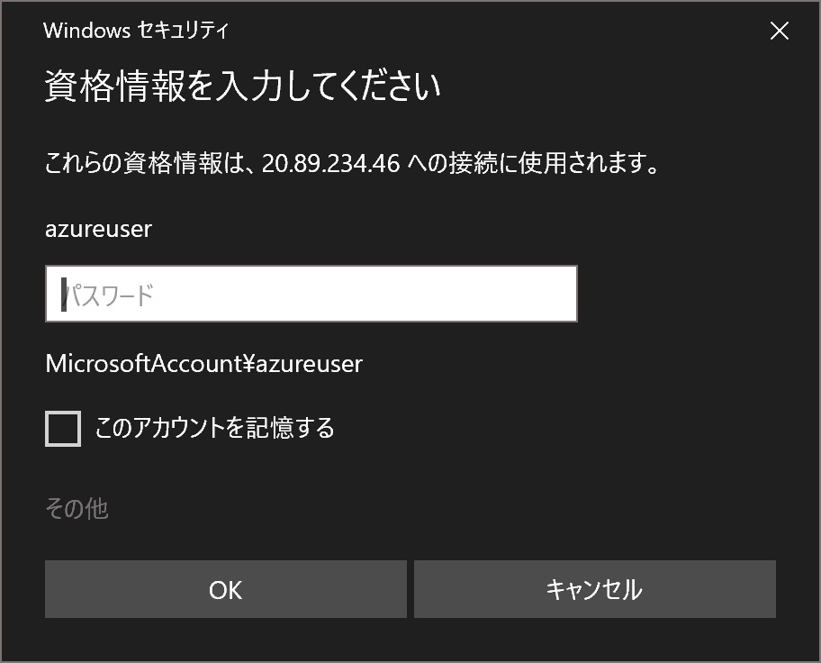
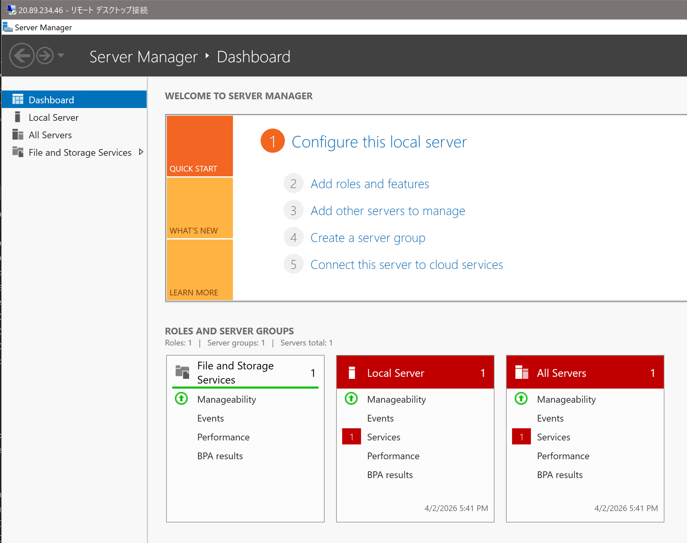

仮想マシンにリモートデスクトップ接続する
適用対象: ✔️ 仮想マシン
この演習では、ローカル PC から Azure の仮想マシンにリモートデスクトップ接続します。
所要時間: 約 5 分
先行の演習
この演習を始める前に 仮想マシンを作成する を完了してください。
リモートデスクトップ
リモートデスクトップ（RDP）は、クライアント PC からネットワーク経由で サーバー や別の Windows マシンに接続し、相手の画面を表示して遠隔操作する仕組みです。
接続先ではリモートデスクトップの サービス が待ち受けており、通常は 3389 番ポートでクライアントからの接続を受け付けます。

リモートデスクトップのデフォルトポート
リモートデスクトップ接続では、接続先のポート番号を省略した場合、デフォルトの 3389 番ポートが接続に使用されます。
例えば 20.89.249.119 は 20.89.249.119:3389 を省略した指定方法です。

省略せずに
20.89.249.119:3389 と指定しても接続が可能です。

接続先がリモートデスクトップ接続を デフォルトのポート以外で待ち受けている場合は、接続するポート番号を指定する必要があります。
例えば 接続先が
50000 番ポートで待ち受けている場合は、 20.89.249.119:50000 と指定してリモートデスクトップ接続します。

タスク 1: 仮想マシンにリモートデスクトップ接続
仮想マシンにリモートデスクトップ接続します。
- ポータルメニューから [仮想マシン] を選択します。
msaz-vmを選択します。- コマンドバーで [️🔄 最新の情報に更新] を選択します。

- プライマリ NIC パブリック IP の右または下の表示を確認します。表示がないように見える場合は画面を大きくするなどして調整します。
- プライマリ NIC パブリック IP の
xxx.xxx.xxx.xxxの右の [クリップボードにコピー] を選択します
- ローカル PC でリモートデスクトップ接続を起動します。
- リモートデスクトップ接続の コンピューター にコピーした IP アドレスを入力して接続します。

- 仮想マシンの作成時に指定したユーザー名とパスワードを入力して [OK] を選択します。

- 仮想マシンにリモートデスクトップ接続できることを確認します。
Windows Server の場合は サーバーマネージャー が起動します。